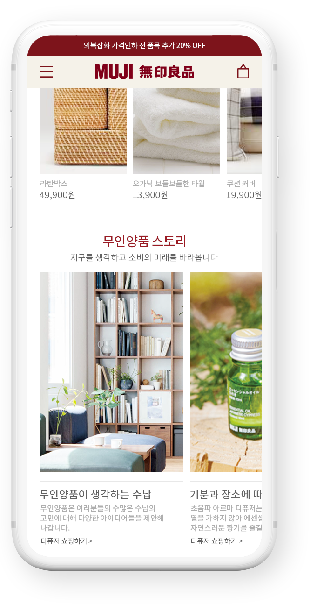

01
김하연의
김하연의
포트폴리오 웹사이트
My own portfolio website
반응형 웹사이트로 제작해 다양한 환경에서도 포트폴리오 사이트에 접속할 수 있도록 하였으며 저의 개성과 취향을 반영하면서도 필수적인 내용만 담아 복잡하지 않은 웹사이트를 제작하고자 하였습니다.

02
무인양품
무인양품
모바일 사이트 리뉴얼
Renewal of muji's mobile website
다양한 모바일 디스플레이 사이즈에 맞춰 잘 구현될 수 있도록 제작하였으며 내비게이션 상단 배치를 통해
편의성을 높이고 각 페이지에 맞는 플러그인을 활용해 기능을 구현했습니다.
03
웹접근성을 고려한
A website which is
웹접근성을 고려한
설악케이블카 웹사이트
A website which is
accessible to everyone
설악케이블카는 광범위한 고객들이 방문하는 장소이기 때문에 웹사이트 또한 모든 사용자들이 손쉽게 접근하고 정보를 얻을 수 있도록
웹접근성을 고려한 웹사이트를 만들었습니다.
04
다양한 오픈소스
A practice for
다양한 오픈소스
활용을 위한 웹사이트 제작
A practice for
learning various open sources
다양한 오픈소스를 필요에 맞게 수정하고 활용할 수 있는 능력 습득을 위하여 가상의 웹사이트를 제작했습니다.

05
HTML5 시멘틱태그
A practice for learning
HTML5 시멘틱태그
이해를 위한 웹사이트 제작
A practice for learning
html5 semantic elements
HTML5를 학습하고 이해하기 위하여 header, nav, main, section, article, footer 등의 시맨틱 태그를 적극 활용하여 각 기능과 내용에 맞게 코딩된 시맨틱 웹 페이지를 만들고자 했습니다.